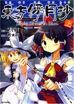

- Welcome to Touhou Wiki!
- Please register to edit. For assistance, check in with our Discord server or IRC channel.
Silent Sinner in Blue
| 東方儚月抄 Silent Sinner in Blue | |
|---|---|
|
 | |
| Publisher | |
| Released |
June 2007 through April 2009 |
| Writers |
ZUN |
| Illustrators | |
| Comic artists | |
| Chapters |
21 |
| Comes with |
Silent Sinner in Blue (CD) (volume 1) |
Touhou
Touhou Bougetsushou (東方儚月抄) is a loosely interconnected storyline about the Lunarians that includes Silent Sinner in Blue, Cage in Lunatic Runagate, and Inaba of the Moon and Inaba of the Earth. Bougetsushou (儚月抄) can be translated as "Ephemeral Moon Vignette"; compare with the main title of its predecessor 東方永夜抄 ～ Imperishable Night (Touhou Eiyashou), where "永夜抄" translates to "Eternal Night Vignette".
Story Summary[edit]
Silent Sinner in Blue follows the efforts of Reimu Hakurei, Marisa Kirisame, and the residents of the Scarlet Devil Mansion as they attempt to send a rocket to the moon, purportedly in order to invade the Lunar Capital.
Read online (complete)[edit]
MangaDex: Touhou Bougetsushou ~ Silent Sinner in Blue.
Released by Gaku Gaku Animal Land.
Compilation Version[edit]
SSiB Complete
Compilation of all the chapters.
Volumes[edit]
Additional Information[edit]
In the June 2007 issue, in parallel with Chapter 1, an interview report with ZUN was published.
The first of three volumes of the graphic novel compilation (tankoubon) went on sale on April 9, 2008, accompanied by a soundtrack CD. The second volume was released on December 9, 2008. And the third on October 10, 2009.
The names of volume are "Upper Volume" (上巻 Jou-kan) - "Middle Volume" (中巻 Chuu-kan) - "Bottom Volume" (底巻 Tei-kan), which is a little odd; on Japanese, or Kanji culture, the traditional order of three books is named normally as "Upper - Middle - Lower", so they should call it normally not "Bottom Volume" (底巻 Tei-kan) but "Lower Volume" (下巻 Ge-kan). This irregular names are derived from Sumiyoshi Sanjin, which appears in the first volume.
External Links[edit]
Wallpaper from the official site
Wallpaper from the official site
From SSiB Webblog (08-09-2007)
From SSiB Webblog (09-08-2007)
From SSiB Webblog (10-09-2007)
From SSiB Webblog (11-09-2007)
From SSiB Webblog (01-09-2008)
From SSiB Webblog (02-09-2008)
From SSiB Webblog (03-09-2008)
From SSiB Webblog (04-09-2008)
From SSiB Webblog (06-09-2008)
From SSiB Webblog (01-2009)